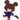
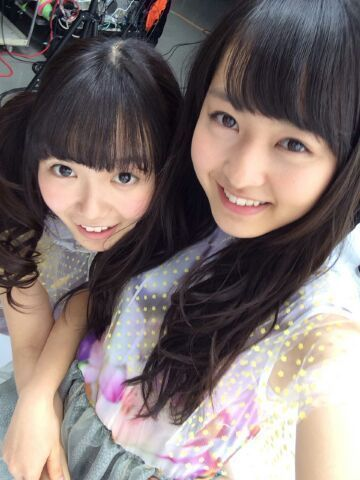
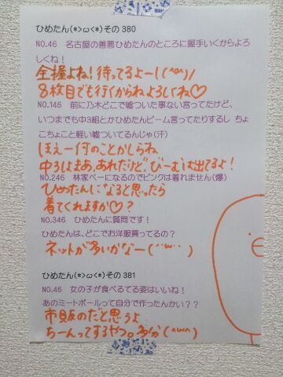

| 2014/03 20 Thu | ひめたん(*>ω<*)そ の422 |
なかいさん 


ひめたんがおばけみたいな顔してるけど
楽しそうだからいいや( ´ ▽ ` )
中元さんと伊藤さんで なかいさんだよ
高校卒業＆大学合格おめでとう
童顔だけどひめたんのおねーちゃん万理華！
ってゆーか歳そんなかわんないかー
ゆったん(斉藤優里ちゃん)から
ステキなニックネーム授かったよ
「えくぼひめ」＊＊
にゃーゆったん:(´゜ω゜｀):らぶ
ゆったんはそんな気なくて
ポロッと呼んでみたらしいんだけど
ひめたんが気に入ってずっと連呼してる♪♪
えくぼひめえくぼひめ、えくぼひめ！
これでまたひとつニックネーム増えたよー
ひめたん、ひめか、ひめ、
めーちゃん、たんひめ、おひめ、
ばかりぼん、ひめさん、ひめらん
えくぼひめ←New!
あ、そうそう報告
やっと病院いってきたよ( ´ω` )おまたせー

 5ミリと6ミリ
5ミリと6ミリ
どっちの坊主が好きですか？
ごめんね、今から失礼なこと言うね
5ミリ6ミリがあまりピンとこないんだよね。
5ミリにしたら伸びて6ミリにもなれるし
5ミリいっちゃお( ^O^ )
ひめたんは乃木坂に入ってなかったら
将来なりたかった花屋さんはありますか？
ピンポイントなんやね
ひめたんはマーガレットのお花がすきなので
マーガレット専門店でも開こうかしら＼＊／
どうしたらひめたんみたいな
かわいくて皆に夢を与える
ステキなアイドルになれますか？
あらーとっても嬉しいよーありがとう(〃〃)
対象は誰でもいいから、誰かにとっての
アイドルでいることからやってみましょ♪
あなたを見てると元気になるよ！とか
周りを照らす存在になれたらステキだよね
本当のアイドルさんもそれの延長だと思うの。
だからひめたんもそんな人になりたいな
 ひめたんは洋画を見る時、字幕で見る？
ひめたんは洋画を見る時、字幕で見る？
吹き替えで見る？とりあえず逆立ちして見る？
吹き替え一択！
なんの木の樹液が好みですか？
ヒノキの樹液ぺろぺろ(＾ω＾)してても
ひめたんのこと嫌いにならないなら
その質問答えますがいかがでしょう
ミミズかゴキブリだったら
どっちが苦手？・・・・ｗ
どっちも苦手。怖いーー
そういやお二方とも
しばらくおめにかかってないなあ
ところで、ひめたんの得意教科って何ですか？
ちなみに私は、きゅんきゅん王国の
歴史が得意です(((o(*゜▽゜*)o)))
かわいいーなんてかわいいのー
かわいいけどきゅんきゅん王国は
建国してから45日しか経ってないから
みんな得意なのが当たり前なんだよ♪♪
最近、MV見るときはいっつも
ひめたんがどこにいるか気にしちゃう
ひめたんなんか呪いかけた？
呪いって言わないでー
(<・ω・>)びーむだよー
ひめたんはエイプリルフールにつく嘘は
もう決めてる？
ひめたんは嘘が上手ではないので
5年前に諦めました
エイプリルフールに張り切って嘘を考えることを。
よく、横並びで写真撮ってたりするけど、
ひめかちゃんはだいたいなんか低いよね笑
あと、体半分メンバーのうしろとか笑
どうしてー？
しゃいなの？？
ああ、確かに半身隠れてるかもね
なんてゆーか
よくアイドルやってるなって言われちゃうけど
あんまし前に出ていかないタイプの人なのよー
ひめたんの"日記"の
コメント欄下２ケタに46を踏んだ方へ
手書きでコメ返するコーナー
＼ ひめたん46 ／

アドバイスいただいてちょっと変えた♪
ありがとうございましたっ
いつもコメントたくさん
ありがとうございます
コメント読んでると
春一番で飛ばされた方は
ほぼいなかったみたいで安心したー( ´ ▽ ` )
中には飛ばされた方もいらっしゃったけど
コメントくださってる時点で
とりあえず安否確認できたのでよしとします
ご無事でなにより
これでひめたんの快眠も期待できる。
(＊´・ω・＊)
コメント(523)
2014/03/20 23:48